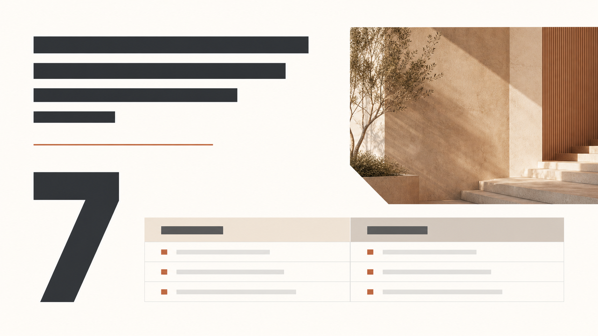

Signal Dark
signal-dark
For frontier technology, product launches, and systems demos. Midnight background, cyan signal lines, controlled violet contrast, large hero visual, and dark data modules.
These boards are original AI-generated moodboards. They guide palette, typography hierarchy, image treatment, chart/table treatment, and whitespace; they are not copied presentation templates.
signal-darkFor frontier technology, product launches, and systems demos. Midnight background, cyan signal lines, controlled violet contrast, large hero visual, and dark data modules.

paper-blueFor research, technical reports, and evidence-led discussion. Warm-white canvas, navy hierarchy, a framed source figure, native chart/table treatment, and restrained coral annotations.

sunset-editorialFor strategy, consulting, executive, and brand narratives. Ivory space, oversized metrics, warm photography, terracotta rules, and quiet comparison modules.